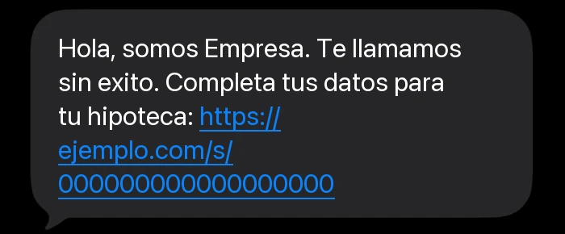
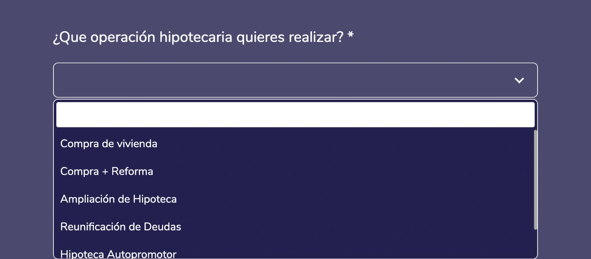

Proyecto 11 · SMS con formulario personalTodos los proyectos
Un mensaje de texto con un enlace personal, y el cliente completa lo que falta por su cuenta.
El cliente recibe un SMS con un enlace que es solo suyo. Al abrirlo encuentra un formulario que ya trae lo que se sabía de él, y solo rellena lo que falta. Sirve para retomar a quien no se pudo localizar, para pedir datos que faltan o para actualizar los que han cambiado.
1Faltan datos del cliente
2Recibe un mensaje
Hola, Marta. Para seguir con su solicitud nos falta un dato. Puede completarlo aquí: enlace personal
Un solo mensaje corto. Solo sale cuando está permitido enviarlo.
3El formulario ya trae lo que se sabía
- Nombre
- Marta Ruiz
- Le interesa
- Mantenimiento
- Para cuándo
- El mes que viene
4La ficha se completa sola
Marta Ruiz
Datos pendientesDatos completos- Para cuándo
- El mes que viene
La herramienta real




Qué cambia
Antes, cada dato que faltaba había que pedirlo a mano, cliente por cliente, y muchas solicitudes se quedaban a medias.
Para el cliente
Recibe un mensaje corto con un enlace. El formulario ya trae sus datos y solo completa lo que falta.
Para el equipo
La ficha se actualiza con lo que el cliente rellena. El mensaje solo sale cuando está permitido enviarlo.
Qué hice yo
- Diseñé el recorrido: cuándo sale el mensaje, qué dice y a dónde lleva.
- Ajusté el texto para que quepa en un solo mensaje.
- Hice que el enlace sea personal y no se pueda adivinar ni alterar.
- Preparé un panel para seguir los resultados y el manual de mantenimiento.
Hecho conTwilio · Zoho CRM · Cloudflare Workers